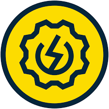
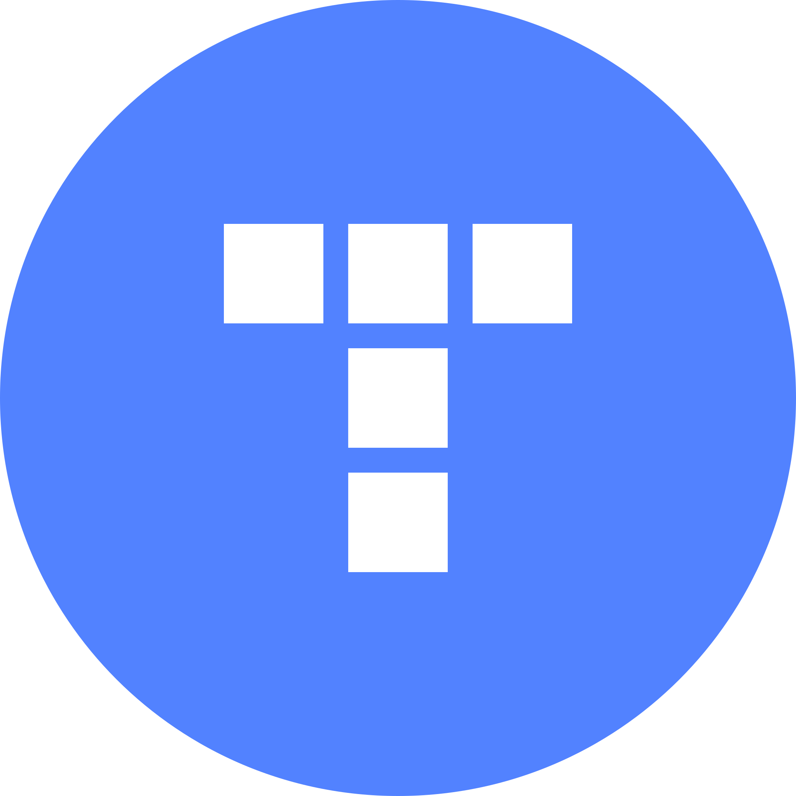
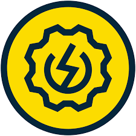
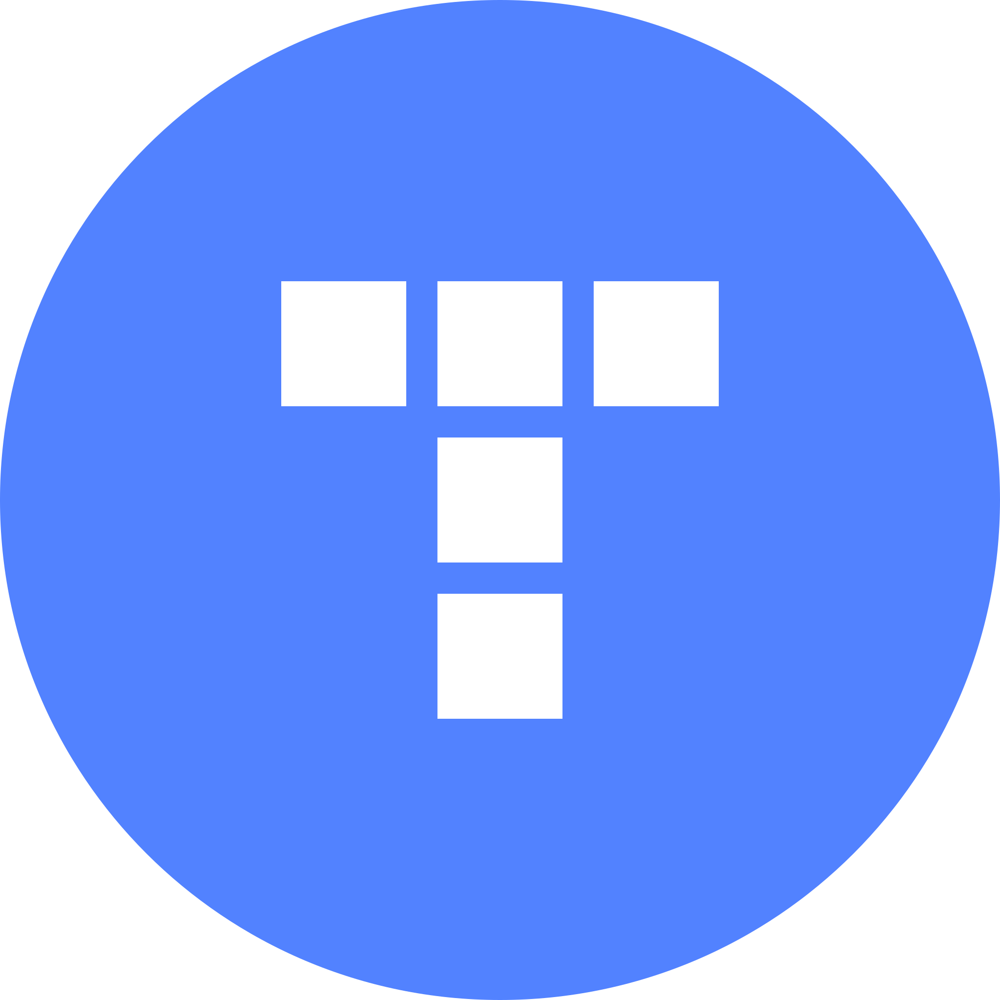
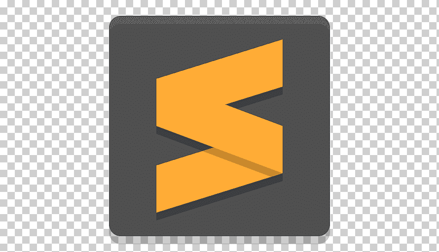
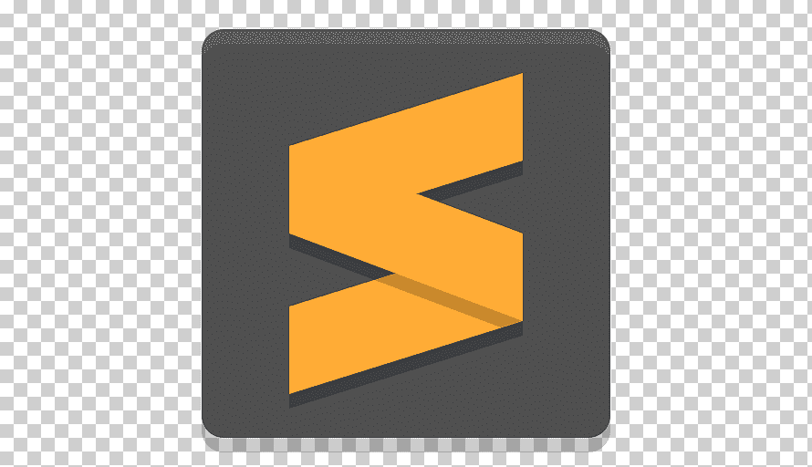

Ниточкин Игорь Сергеевич
Junior QA/Младший ручной тестировщик
Телефон: +7 (965) 459-1381
Email: initochkin@yandex.ru
GitHub: github.com/IgornitQA
Адрес: Краснодар, Россия
Цель
Стремлюсь развивать карьеру тестировщика ПО, внося вклад в повышение качества продуктов, работая в динамичной команде, где ценятся инновации, автоматизация тестирования и гибкие методологии.
Профессиональный профиль
Начинающий специалист в области тестирования ПО. Владею современными инструментами тестирования (, Postman, ЯндексТрекер, TestIT, DevTools, Charles, Kibana, Grafana, Miro, BuildinIO, SOAP, REST) Обладаю аналитическими способностями и инициативой для непрерывного профессионального роста.
 



 

Опыт работы
Компания А, Город
Тестировщик ПО / QA Engineer — ММ.ГГГГ — ММ.ГГГГ
- Разработка и выполнение тест-кейсов для автоматизированного и ручного тестирования.
- Интеграция тестов в процессы CI/CD с использованием Jenkins и Git.
- Снижение количества дефектов на X% за счёт оптимизации процессов тестирования.
Компания Б, Город
Младший тестировщик ПО — ММ.ГГГГ — ММ.ГГГГ
- Проведение функционального, регрессионного и нагрузочного тестирования.
- Документирование баг-репортов и тесное взаимодействие с командой разработчиков.
- Участие в Agile-командах, участие в sprint review и планировании спринтов.
Проекты
- Проект «X» — разработка автоматизированных тестов для крупного веб-приложения, что позволило сократить время регрессионного тестирования на 30%.
- Проект «Y» — участие в интеграции CI/CD пайплайна, в рамках которого была реализована система автоматического деплоя тестовых сборок.
Образование
Название ВУЗа, Город
Факультет: [Название факультета] — Специальность: [Название специальности]
Год выпуска: XXXX
Дополнительное образование и сертификаты
- [Название курса или сертификата] — [Организация], Год
- [Название курса или сертификата] — [Организация], Год
Профессиональные навыки
- Методологии: Agile, Scrum, Waterfall
- Тестирование: Ручное тестирование, Автоматизированное тестирование
- Инструменты: Selenium, Postman, JIRA, Jenkins, Git
- Языки программирования: Java, Python (при необходимости)
- Базы данных: SQL (запросы, оптимизация)
Личные качества
- Аналитический склад ума и внимание к деталям
- Коммуникативность и умение работать в команде
- Стремление к постоянному развитию и обучению
- Ответственность и инициативность